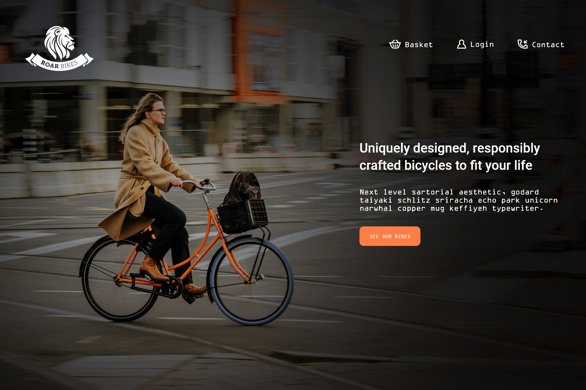

I felt that it was important to keep the main structure of the pages straightforward. I could make the design a little more unique by changing up some elements of the visual design. I made circles a big feature of the design, as many modern sites are made of rectangular sections. Circles complemented the bicycle wheels in the images.
Roar Bikes
Roar Bikes is a fictional online bicycle shop. The task was to create a design for their e-commerce site where they sell their three models of contemporary, high quality bicycles.
This design was created with Adobe XD, and Adobe Illustrator was used to create the background pattern.
Roar Bikes’ clients
The typical client of Roar Bikes prides themselves on buying responsibly made items from local businesses. They like their purchases to be practical and a little unique.
Research and planning
Many bicycle shop e-commerce sites have a sporty feel to them, but I decided to depart from this somewhat since Roar Bikes’ clientele like to stand out from the crowd with distinctive and often strange products.
For inspiration I checked out websites from local retailers that brand themselves as responsible, high quality, and a bit quirky - places that have a hipster feel to them. I noticed pastel colour palettes, classy fonts, black and white elements, and simple iconography. I brought these into my design, and combined them with images that evoke a sense of movement.
Orange is the main pop of colour and is woven throughout the site, with mint and lavender to complement.
How do you make an e-commerce design unique?
Most users have pre-conceived expectations when they visit an e-commerce site. The layout should make it easy for them to search for products, find their shopping cart, and purchase their items. Deviating from typical website layouts could cause confusion and a poor user experience.
The background circles and bicycles overlap with the edges of the page, creating some extra white space that you don’t always get with rectangular designs. Solid colour backgrounds clashed with the images and the colour palette. Instead I created a background pattern out of simple gray icons to give a subtle textured effect. If you look closely, these icons are actually cats and lions, inspired by the bicycle models – Siamese, Sphynx, and Bengal.
Website mock-up
You may view a clickable prototype here to get a better feel for the site. Screenshots of each section will be shown below.
The home page begins with a hero section, filling the space above the fold, followed by a description section providing more detail about the products.
For a Roar Bikes customer, their bicycle is a part of their daily routine. It is their chosen mode of transport for getting around their neighbourhood and city, in addition to being used for recreational activity. The photography for the site features mainly urban environments for this reason.
Since Roar Bikes are hand-crafted on a small scale they have only three bicycle models. All three bikes are displayed on the home page with a short description. Each bike is paired with one of the three main colours from our palette. Clicking the “find out more” button takes the user to the bike’s product page for more detail.
The product page includes detailed information on the bikes, like price and available colours, and a social media section specific to the bike model (shown below). The background makes use of the same cat/lion pattern as the home page to add texture to the white space.
Across the web, social media sections are often carousels containing rectangular images. To me this feels a bit overdone, so to display social media posts made by Roar Bikes customers, circles are utilized again. Images are arranged like bubbles in the center of the page surrounded by lots of white space, rather than taking up the whole width of the screen. If this site were developed, I’d style the bubbles to grow larger on mouse hover to add some interactivity.
Conclusions
I always enjoy an opportunity to practice design skills and Adobe software. I have used Adobe XD in the past at a beginner level, but this time around I was able to keep the components of my project more organized and I took advantage of the software’s features, especially with aligning objects to the grid and creating prototypes.
The project brief allowed for a lot of creativity in the visual aesthetics. The challenge was to be creative within the confines of an e-commerce site design, which still needed to be functional and predicable in its usability. I believe this balance was achieved, and that the typical user would enjoy the design while still being able to properly navigate the site. I’d love another opportunity to work through a similar challenge of finding this balance, and in the future I would dedicate more time to the research and idea iteration process and see what other designers have created.
This project idea came from an Adobe XD course on Udemy called User Experience Essentials – Adobe XD UI UX Design. Images are from Unsplash and Snipstock.